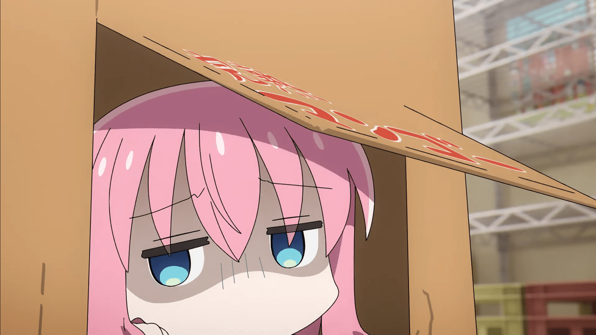
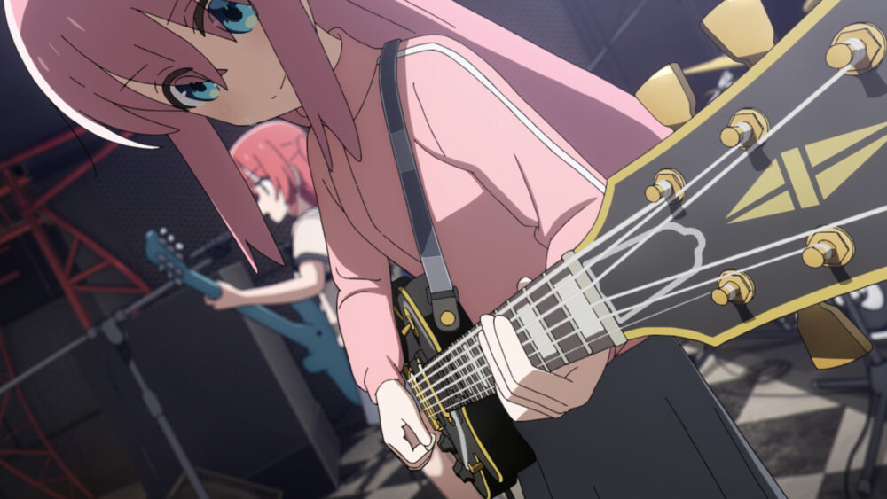

Bocchi the Rock! é uma série japonesa de mangá yonkoma escrita e ilustrada por Aki Hamaji.
Foi serializado na revista de mangá seinen de Houbunsha, Manga Time Kirara Max, desde dezembro de 2017.

Seus capítulos foram coletados em oito volumes tankōbon em novembro de 2025.

Uma série de mangá spin-off, intitulada Bocchi the Rock! Side Story: Heavy-Drinking Diary de Kikuri Hiroi, começou a ser publicado em julho de 2023.
